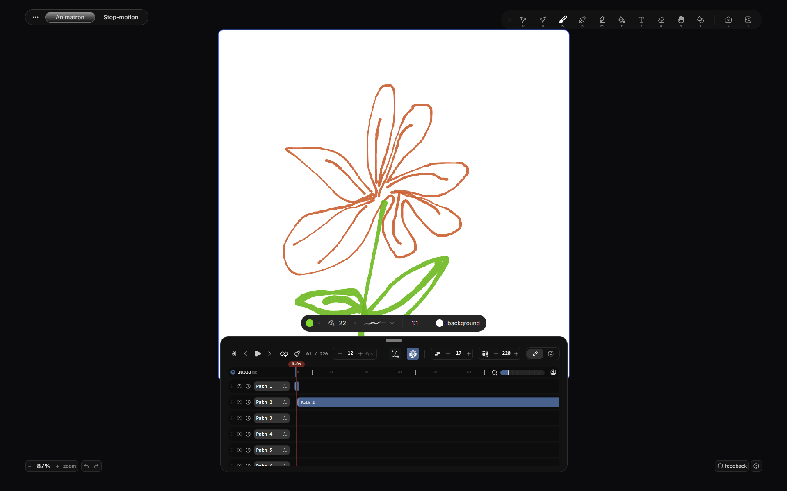

I spent more time learning animation tools than animating.
LAO is the tool I wanted.
Two modes — continuous line and stop motion. A canvas, a pen, and a timeline that's already running. Almost nothing to learn.
Early access · Building in public

I spent more time learning animation tools than animating.
LAO is the tool I wanted.
Two modes — continuous line and stop motion. A canvas, a pen, and a timeline that's already running. Almost nothing to learn.
// three steps, and the third
// one happens on its own
Open it
Draw it
Already moving
Mode 01
One stroke, moving. Draw and the line keeps its momentum — no keyframes, no rigging.
Mode 02
Frame by frame, onion-skinned. The old way, without the setup.
Open the canvas and draw. It's already moving.
One file. .lao. On your machine, in your folder.
Any machine, online or off. It'll still open in ten years.
Export to MP4, WebM, or GIF. Drop it in a deck, a site, a group chat.
Your work outlives the tool. That's the deal.
// no cloud, no account, no export jail
Teachers
Turn the thing you keep redrawing on the whiteboard into a loop you reuse every term.
Explainers & writers
A moving diagram beats three paragraphs.
Designers
Build assets and loops in minutes instead of scheduling them.
Anyone who thinks by drawing
This is a sketchbook that moves.
Every screen, flow, and interaction designed by hand in Paper, on a small design system built from fluid functionalism, beUI, and chanhdai. AI can help you build. It can't draw your map.
Early access goes out in waves. Tell me what you'd animate and you'll be in an earlier one.
{{ successMessage }}